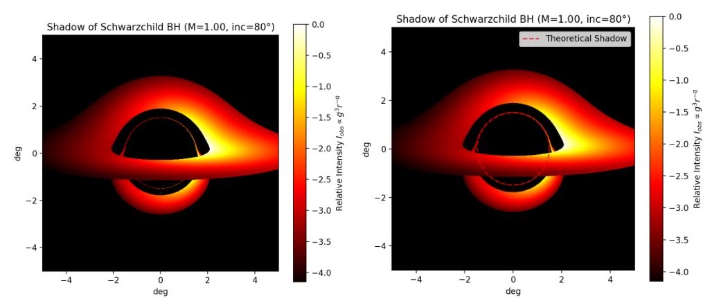
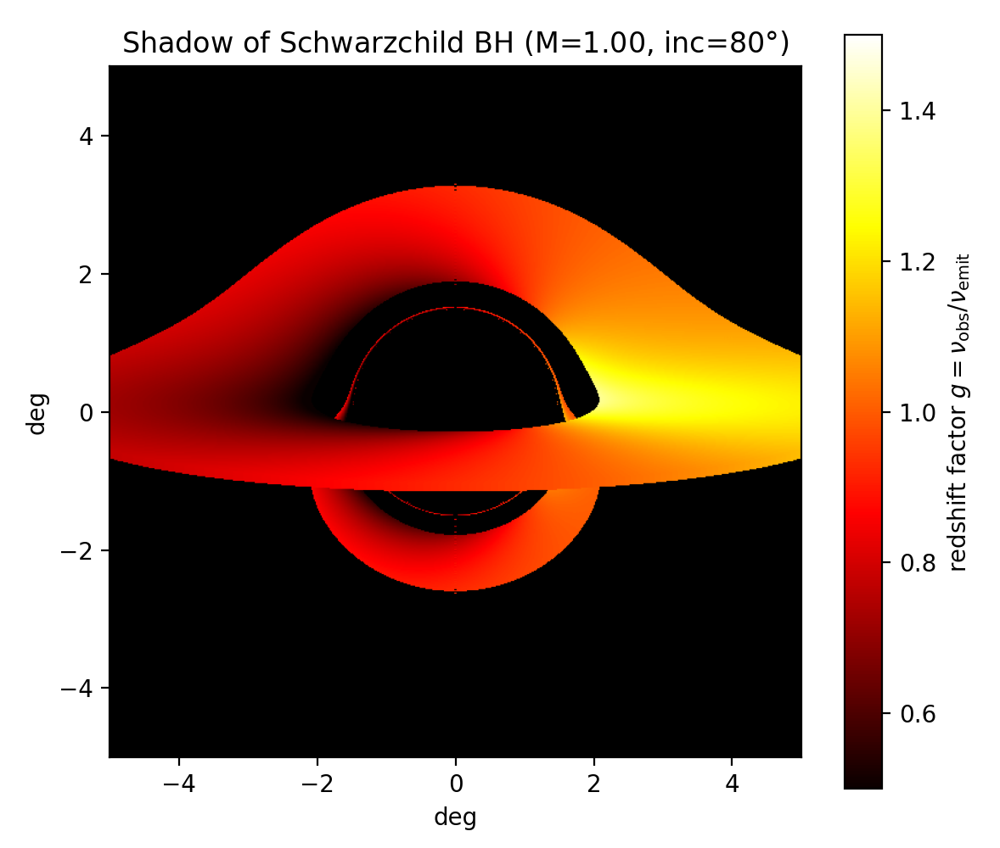
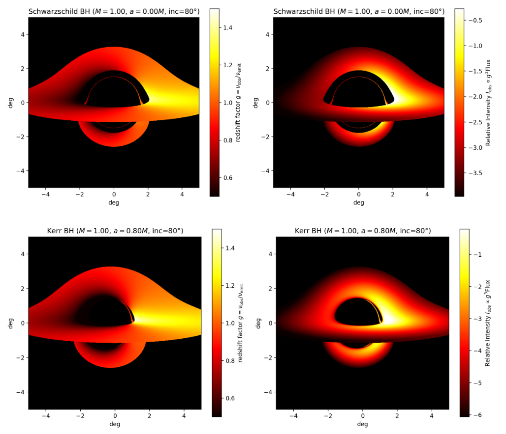
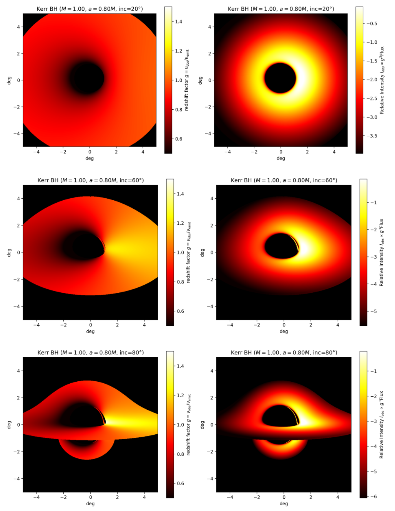
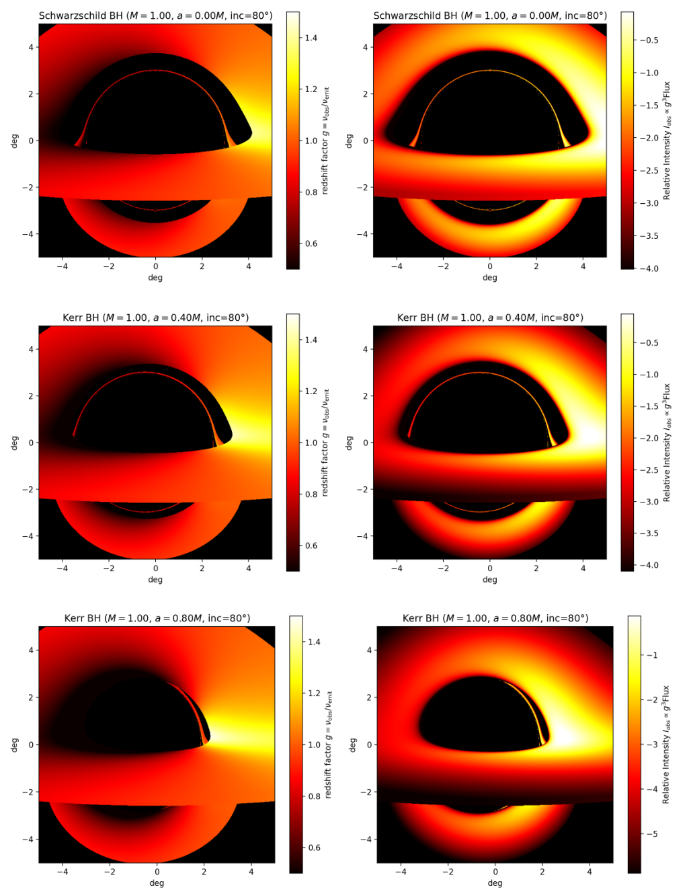
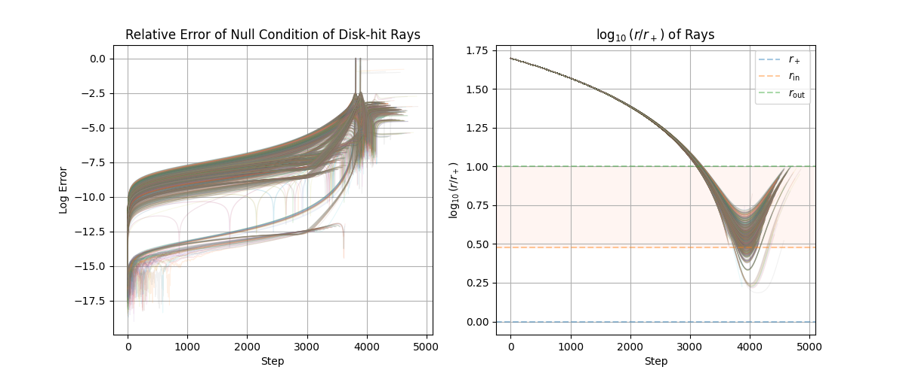

Ongoing project
General relativity · Black-hole imaging
Black-Hole Ray Tracing and VLBI Imaging
Tracing photons through curved spacetime to understand black-hole shadows, lensed disk images, and relativistic brightness asymmetry.
Current stage: This page presents the ray-tracing results documented in the PH471 report, including Schwarzschild and Kerr disk images and numerical consistency checks. The project is ongoing, with extension toward simulated VLBI imaging.
View report (PDF)Current results
- Different physical scales shape the image. The Schwarzschild shadow, photon sphere, and disk inner edge have distinct roles in photon capture, strong lensing, and emission.
- Disk motion and geometry control visibility. Doppler shifts create brightness asymmetry even without black-hole spin. In the Kerr comparisons, spin, inclination, and optically thick disk occlusion change which narrow ring-like segments are visible.
- Numerical checks support qualitative interpretation. The report tracks null-condition errors along disk-hit rays, identifying stronger integration errors near the most strongly lensed trajectories.
Null-geodesic ray tracing
Photons follow null geodesics through curved spacetime. Backward ray tracing starts from an observer's image plane and integrates each pixel's photon direction toward the scene, determining whether the ray intersects the disk, is captured by the black hole, or escapes without disk emission.
The report uses metric signature \((-,+,+,+)\), Schwarzschild geometry for the non-rotating case, and Boyer–Lindquist coordinates for Kerr black holes with mass \(M\) and spin \(a=J/M\). In geometrized units \(G=c=1\), the Schwarzschild line element is
Observer, integration, and disk model
The observer is at a finite distance. Initial photon momenta are constructed in the observer's local tetrad, transformed to global coordinates, and integrated with fourth-order Runge–Kutta (RK4). Observer position, inclination, and image resolution determine the screen setup.
The disk lies on the equatorial plane with prescribed inner and outer radii. The simple emission prescription is \(I_{\rm em}\propto r^{-q}\); the report also discusses the physically motivated Novikov–Thorne relativistic thin-disk model. For the optically thick comparisons, a ray terminates at its first disk intersection.
Redshift and observed intensity
The frequency shift combines gravitational effects and emitter/observer motion. With four-velocity \(U^\mu\), the redshift factor and specific-intensity transformation are
Evaluating the emission and redshift for disk-hit rays produces the intensity and redshift maps below.
Schwarzschild: shadow, lensing, and disk emission
Shadow and characteristic radii
The central shadow is an apparent capture region on the image plane. Its boundary is related to unstable null geodesics, whereas the event horizon is a causal boundary in spacetime. For a distant observer, the critical impact parameter is \(b_{\rm crit}=3\sqrt{3}M\).

| Quantity | Value | Role |
|---|---|---|
| Event horizon | \(2M\) | Causal boundary |
| Photon sphere | \(3M\) | Unstable circular null orbits |
| Critical impact parameter | \(3\sqrt{3}M\) | Distant-observer shadow boundary on the image plane |
| ISCO / disk inner radius | \(6M\) | Inner edge of the emitting disk in the Schwarzschild setup |
Dark regions outside the theoretical capture boundary can arise when rays miss the emitting part of the disk. The disk's inner edge and the shadow boundary therefore need not coincide.
Photon sphere and ring-like features
Using conserved energy \(E\) and angular momentum \(L\), radial null motion can be written as
The potential has an unstable maximum at \(r=3M\). Near-critical rays can accumulate large deflection angles while remaining close to this region. Higher-order disk images are consequently compressed near the critical curve. The thin bright structure near the shadow is interpreted in the report as a photon-ring-like feature, while the broader emission is dominated by direct and weakly lensed disk images.
Doppler asymmetry without black-hole spin
The Schwarzschild reference has inclination \(i=80^\circ\). In this orientation, the right side of the rotating disk has larger \(g\) and appears brighter; the left side has smaller \(g\). Gravitational redshift also contributes, especially toward the inner disk.

The disk's orbital motion explains why a brightness-asymmetric image can arise even in a non-rotating, spherically symmetric spacetime.
Kerr: spin, inclination, and disk occlusion
Schwarzschild versus Kerr
Kerr rotation changes the photon trajectories through frame dragging. A zero-angular-momentum observer (ZAMO) has angular velocity
Prograde and retrograde near-critical trajectories then behave differently. In the report's optically thick disk geometry, the narrow prograde-side crescent can remain exposed while other trajectories meet the disk first and are screened.

Inclination dependence
The inclination series holds \(a/M=0.8\) fixed and compares \(20^\circ\), \(60^\circ\), and \(80^\circ\). Near face-on viewing, the direct inner-disk image overlaps the near-critical image region. At higher inclination, the geometry can expose part of the narrow crescent while disk occlusion still hides other segments.

Spin dependence
The spin series compares \(a/M=0\), \(0.4\), and \(0.8\) at \(i=80^\circ\). Stronger spin changes the prograde/retrograde geodesic asymmetry and moves the prograde ISCO inward, changing how the emitting disk overlaps the near-critical image region.

Within this model, the visibility of a ring-like segment reflects the combination of spacetime, inclination, and optically thick disk screening. These image-based comparisons provide a qualitative interpretation of the features shown in the report.
Numerical validation
Metric compatibility and the geodesic equation preserve \(g_{\mu\nu}p^\mu p^\nu=0\) in the exact theory. The numerical test monitors the remaining contraction relative to the size of its individual terms:

The reported initial relative residuals are around \(10^{-15}\)–\(10^{-18}\). For most disk-hit rays, they grow to roughly \(10^{-5}\)–\(10^{-4}\) near disk crossing; a small number of near-critical rays show larger spikes. The radial histories also show some rays entering inside the disk's inner radius before returning to the emitting disk.
These checks support qualitative interpretation of the main disk and shadow features. Resolving the most strongly lensed trajectories more accurately requires smaller integration steps or higher-order integration methods. A small initial residual alone does not measure the final image accuracy.
Ongoing work
The report establishes a ray-tracing foundation connecting null geodesics to shadows, lensed disk images, Doppler asymmetry, and spin-dependent visibility. The broader Black-Hole Ray Tracing and VLBI Imaging project remains in progress.
- Refine the numerical treatment of near-critical rays and test integration accuracy.
- Continue the extension toward simulated VLBI imaging.
Current figures and numerical results come from the supplied ray-tracing report. The VLBI extension is ongoing and is not represented by these report figures.
Report references
- Luminet, J. P. (1979). Image of a spherical black hole with thin accretion disk. Astronomy and Astrophysics, 75, 228–235.
- Page, D. N. & Thorne, K. S. (1974). Disk-accretion onto a black hole. Time-averaged structure of accretion disk. The Astrophysical Journal, 191, 499–506. doi:10.1086/152990.
- Carroll, S. M. (2004). Spacetime and Geometry: An Introduction to General Relativity. Addison Wesley.
- Mueller, T. & Grave, F. (2010). Catalogue of Spacetimes. arXiv:0904.4184.
- The Kerr solution, Chapter 21 lecture notes, as cited in the report.